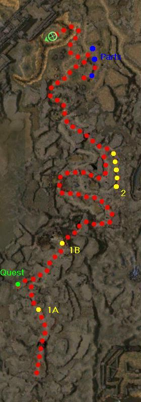

Elite: None / not listed
M2
Fort Ranik
◉ Mission Map

Click to enlarge · Local cache · Wiki
Summary (click to expand)
Your party must push the invading Charr army back to the Northern Wall, using any means at your disposal, including 2 trebuchets you find en route.
Region: Ascalon · Mission: 2 of 25 · Type: Cooperative
✓ Objectives
Retake the Great Northern Wall.
- Push back the invading Charr army.
- ADDED: Locate the RESTRAINING BOLT [sic] and return it to Siegemaster Lormar.
- ADDED: Locate the ARMING CRANK [sic] and return it to Siegemaster Lormar.
- ADDED: Locate the RELEASE LEVER [sic] and return it to Siegemaster Lormar.
- *BONUS* Rescue Deeter Saberlin from his Charr imprisonment.
→ Walkthrough
Your party must help the guards to retake the Great Northern Wall by pushing the Charr invasion back. Proceed forward until you sight the wall. Eventually, you will meet Siegemaster Lormar who will brief you how to recover and use trebuchets.
To make the siege mechanisms operable again, you need to salvage other Wrecked Catapults and use their parts to fix the one near Lormar. Each of the needed pieces are indicated in the wiki-map. Use the ALT key to search for Wrecked Catapults and click on them to obtain a usable part. Pick them up one by one and deliver them to Lormar by talking to him.
Once the trebuchet is fixed, use the lever once to charge it first and a second time to fire it. Repairing the trebuchet is not required to complete the mission, so high level players can skip this step and charge in.
Continue ahead and you will find another trebuchet - this one doesn't need repairing and aims towards a large crater, which Charr patrol out of. Players may find no use for this tool until foes get closer. (If the player is quick enough, they can quickly activate the trebuchet and kill the final Charr boss to complete the mission, before the Charr run away). Shortly after the player approaches the trebuchet, all enemies will scatter from the blast point.
Charr that survive the impact can be left alone as long as they don't interfere with the path leading to the boss and its group. Killing them completes the mission.
★ Bonus
To gain the bonus, your task is to find Trooper Deeter Saberlin, who can be seen while proceeding with the mission's main objectives and only takes a minor detour (point 2).
Master Armin Saberlin is the NPC that provides this task, he joins your party early in the mission (point 1A) and will follow you up to the large ruined wall (point 1B). After clearing the mob with the boss, you can talk to him to activate the bonus if he is still alive; however, it actually does not matter if he survives or not - performing the task is enough to complete the bonus.
◆ Hard Mode
At the start, the weak NPCs will be under attack from several groups of Charr. There is always a visible stationary group, but two other patrol groups far behind them. Those who naively engage the standing group may get overwhelmed by the additional forces. To avoid this, send a lure character (or, even better Ebon Vanguard Assassin Support) as bait and finish the stationary group far from its spawn point. Then move slowly to face the patrols which are scripted to push forward with the invasion.
When facing the Charr Stalkers, use walls to obstruct projectiles - minimizing damage against your party from Ignite Arrows, and spread out if attacked in open areas.
At the second half while repairing the trebuchets, there will be groups with two Charr Fire Callers. Once again use a lure so they cast Meteor Shower away from your backliners and only then engage.
When facing the final boss after repairing and using the trebuchet, be very careful with engaging the boss's group. Many other groups surround them, and it's very easy to get overwhelmed here if you don't carefully pull them.
☠ Bosses & Elites
Elite: None / not listed
Elite: None / not listed
Elite: None / not listed
Elite: None / not listed
Elite: None / not listed
✦ Tips & Notes
Skill recommendations
The party size is only 4 so:
- Party healing such as Heal Party or Protective Was Kaolai might be advisable to counter the degeneration from Lingering Curse and Faintheartedness (if your team cannot bring hex removal).
- The canyon walls will block your line of sight; Do not take projectile skills. Since you encounter small groups of foes, area of effect skills are not particularly effective.
- Consider bringing an enchantment removal skill to remove Shield of Judgment from the Charr Martyrs and Overseers if your team depends on martial professions.
- Ebon Vanguard Assassin Support is especially useful here, as it can be used to distract charr groups that overlook the party from hard to reach locations and can keep martyrs busy.
- Display the Agent title.
Notes
- There is a quest within this mission, called "Deliver a Message to My Wife", which can be taken by talking to Gurn Blanston (green dot on the wiki-map).
- After completing this mission, your party will be taken to Frontier Gate.
- Complete exploration of this mission contributes approximately 0.8% to the Tyrian Cartographer title.
- Completion of this mission in Hard Mode will fill in page #3 of the Young Heroes of Tyria storybook.